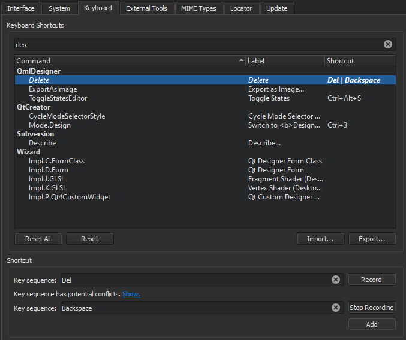

Keyboard Shortcuts
Keyboard shortcuts make application development faster. To view all Qt Creator functions and their keyboard shortcuts, select Preferences > Environment > Keyboard.

The tables in this topic list the default keyboard shortcuts. They are categorized by actions.
Conflicting Shortcuts
Shortcuts that are displayed in red are associated with several functions. Qt Creator executes the function that is available in the current context. If several functions are available for the same shortcut in the current context, Qt Creator will not execute any function due to the conflict.
A keyboard shortcut might also conflict with a shortcut that your window manager uses for its own purposes. If the window manager consumes the key event, the Qt Creator shortcut will not be activated. Typically, you can configure the shortcuts in the window manager, but if that is not allowed, you can change the Qt Creator shortcuts.
For example, Unity on Ubuntu 11.10 by default uses F10 in its window manager, and therefore the default Qt Creator keyboard shortcut F10 (Step Over) will not work on that system.
Showing Shortcuts in Menus
To override the platform default value that determines whether keyboard shortcuts are shown in the labels of context menu items, select Preferences > Environment > Interface. The label of Show keyboard shortcuts in context menus indicates whether the platform default value is on or off.

Top 5 General Shortcuts
| Action | Windows and Linux | macOS |
|---|---|---|
| Return to the editor | Esc | Esc |
| Go to previous open document in history | Ctrl+Tab | Opt+Tab |
| Build project | Ctrl+B | Cmd+B |
| Run | Ctrl+R | Cmd+R |
| Toggle output views | Alt+<number> Where the number is the number of the view. | Cmd+<number> |
Top 5 Locator Shortcuts
| Action | Windows and Linux | macOS |
|---|---|---|
| Activate Locator | Ctrl+K | Cmd+K |
| Find a file | Ctrl+K, <text> | Cmd+K, <text> |
| Start debugging a run configuration of the active project | Ctrl+K, dr | Cmd+K, dr |
| Run a run configuration of the active project | Ctrl+K, rr | Cmd+K, rr |
| Trigger a menu item | Ctrl+Shift+K, <menu item name> | Cmd+Shift+K, <menu item name> |
Top 10 Editor Shortcuts
| Action | Windows and Linux | macOS |
|---|---|---|
| Auto-indent selection | Ctrl+I | Cmd+I |
| Find references to symbol under cursor | Ctrl+Shift+U | Cmd+Shift+U |
| Follow symbol under cursor | F2 | F2 |
| Go to advanced find | Ctrl+Shift+F | Cmd+Shift+F |
| Go to previous bookmark | Ctrl+, | Ctr+, |
| Open type hierarchy | Ctrl+Shift+T | Ctrl+Shift+T |
| Paste from the clipboard history | Ctrl+Shift+V | Cmd+Shift+V |
| Sort selected lines alphabetically | Alt+Shift+S | Ctrl+Shift+S |
| Switch between header and source file | F4 | F4 |
| Trigger a code completion in the current scope | Ctrl+Space | Ctrl+Space |
Top 5 Debugger Shortcuts
| Action | Windows and Linux | macOS |
|---|---|---|
| Start or continue debugging | F5 | Cmd+Y |
| Exit debugger | Shift+F5 | Cmd+Shift+Y |
| Step over | F10 | Cmd+Shift+0 |
| Step into | F11 | Cmd+Shift+I |
| Step out | Shift+F11 | Cmd+Shift+T |
Top 5 Git Shortcuts
| Action | Windows and Linux | macOS |
|---|---|---|
| Diff | Alt+G, Alt+D | Ctrl+G, Ctrl+D |
| Diff project or repository | Alt+G, Alt+Shift+D | Ctrl+G, Ctrl+Shift+D |
| Diff of current modified editor | Alt+H | Ctrl+H |
| Git blame | Alt+G, Alt+B | Ctrl+G, Ctrl+B |
| Git log repository | Alt+G, Alt+K | Ctrl+G, Ctrl+K |
General Keyboard Shortcuts
Document Navigation Shortcuts
| Action | Windows and Linux | macOS |
|---|---|---|
| Go back | Alt+Left | Cmd+Opt+Left |
| Go forward | Alt+Right | Cmd+Opt+Right |
| Go to line | Ctrl+L | Cmd+L |
| Go to next open document in history | Ctrl+Shift+Tab | Opt+Shift+Tab |
| Go to previous open document in history | Ctrl+Tab | Opt+Tab |
| Go to next split or window | Ctrl+E, O | Ctrl+E, O |
Exit Qt Creator
By default, Qt Creator exits without asking for confirmation, unless there are unsaved changes in open files. To always be asked, go to Preferences > Environment > System and then select Ask for confirmation before exiting.
| Action | Windows and Linux | macOS |
|---|---|---|
| Exit Qt Creator | Ctrl+Q | Cmd+Q |
File Management Shortcuts
| Action | Windows and Linux | macOS |
|---|---|---|
| Open file or project | Ctrl+O | Cmd+O |
| Open in a new window | Ctrl+E, 4 | Ctrl+E, 4 |
| Previous Tab | Ctrl+Alt+Right | Cmd+Opt+Right |
| Next Tab | Ctrl+Alt+Left | Cmd+Opt+Left |
| New project | Ctrl+Shift+N | Cmd+Shift+N |
| New file | Ctrl+N | Cmd+N |
| Save current document | Ctrl+S | Cmd+S |
| Save all documents | Ctrl+Shift+S | None |
| Close current editor | Ctrl+W | Cmd+W |
| Close all editors | Ctrl+Shift+W | Cmd+Shift+W |
Find-and-Replace Shortcuts
| Action | Windows and Linux | macOS |
|---|---|---|
| Activate Locator | Ctrl+K | Cmd+K |
| Find and replace | Ctrl+F | Cmd+F |
| Find next | F3 | Cmd+G |
| Find previous | Shift+F3 | Ctrl+Shift+G |
| Find next occurrence of selected text | Ctrl+F3 | Cmd+F3 |
| Find previous occurrence of selected text | Cmd+Shift+F3 | None |
| Replace next | Ctrl+= | Cmd+= |
| Open advanced find | Ctrl+Shift+F | Cmd+Shift+F |
Text Editing Shortcuts
| Action | Windows and Linux | macOS |
|---|---|---|
| Select all | Ctrl+A | Cmd+A |
| Cut | Ctrl+X | Cmd+X |
| Copy | Ctrl+C | Cmd+C |
| Paste | Ctrl+V | Cmd+V |
| Paste from the clipboard history | Ctrl+Shift+V | Cmd+Shift+V |
| Ctrl+P | Cmd+P | |
| Undo | Ctrl+Z | Cmd+Z |
| Redo | Ctrl+Shift+Z | Cmd+Shift+Z |
UI Navigation Shortcuts
Mode Shortcuts
| Action | Windows and Linux | macOS |
|---|---|---|
| Switch to Welcome mode | Ctrl+1 | Ctrl+1 |
| Switch to Edit mode | Ctrl+2 | Ctrl+2 |
| Switch to Design mode | Ctrl+3 | Ctrl+3 |
| Switch to Debug mode | Ctrl+4 | Ctrl+4 |
| Switch to Projects mode | Ctrl+5 | Ctrl+5 |
| Switch to Extensions mode | Ctrl+6 | Ctrl+6 |
| Switch to Help mode | Ctrl+7 | Ctrl+7 |
| Go to Edit mode In Edit mode:
| Esc | Esc |
Output View Shortcuts
| Action | Windows and Linux | macOS |
|---|---|---|
| Toggle Issues | Alt+1 | Cmd+1 |
| Toggle Search Results | Alt+2 | Cmd+2 |
| Toggle Application Output | Alt+3 | Cmd+3 |
| Toggle Compile Output | Alt+4 | Cmd+4 |
| Toggle other output views | Alt+<number> Where the number is the number of the view. | Cmd+<number> |
| Maximize output views | Alt+Shift+9 | Cmd+Shift+9 |
| Move to next item in output | F6 | F6 |
| Move to previous item in output | Shift+F6 | Shift+F6 |
Sidebar View Shortcuts
| Action | Windows and Linux | macOS |
|---|---|---|
| Activate Bookmarks view | Alt+M | Ctrl+Opt+M |
| Activate File System view | Alt+Y, Alt+F | Ctrl+Y, Ctrl+F |
| Activate Open Documents view | Alt+O | Ctrl+O |
| Activate Projects view | Alt+X | Ctrl+X |
| Full screen | Ctrl+Shift+F11 | Cmd+Ctrl+F |
| Toggle the left sidebar | Alt+0 | Cmd+0 |
| Toggle the right sidebar | Alt+Shift+0 | Cmd+Shift+0 |
Editor Shortcuts
| Action | Windows and Linux | macOS |
|---|---|---|
| Auto-indent selection | Ctrl+I | Cmd+I |
| Rewrap paragraph | Ctrl+E, R | Ctrl+E, R |
| Enable text wrapping | Ctrl+E, Ctrl+W | Ctrl+E, Ctrl+W |
| Toggle comment for selection | Ctrl+/ | Cmd+/ |
| Visualize whitespace | Ctrl+E, Ctrl+V | Ctrl+E, Ctrl+V |
| Trigger a code completion in the current scope | Ctrl+Space | Ctrl+Space |
| Trigger a refactoring action in this scope | Alt+Enter | Opt+Return |
| Display tooltips for function signatures regardless of the cursor position in the function call | Ctrl+Shift+D | Ctrl+Shift+D |
Bookmark Shortcuts
| Action | Windows and Linux | macOS |
|---|---|---|
| Toggle bookmark | Ctrl+M | Ctrl+M |
| Go to next bookmark | Ctrl+. | Ctrl+. |
| Go to previous bookmark | Ctrl+, | Ctrl+, |
Code Block Shortcuts
| Action | Windows and Linux | macOS |
|---|---|---|
| Collapse block | Ctrl+< | Cmd+< |
| Expand block | Ctrl+> | Cmd+> |
| Go to block end | Ctrl+] | Cmd+] |
| Go to block start | Ctrl+[ | Cmd+[ |
| Go to block end and select the lines between the current cursor position and the end of the block | Ctrl+Shift+] | Cmd+} |
| Go to block start and select the lines between the current cursor position and the beginning of the block | Ctrl+Shift+[ | Cmd+{ |
| Select the current block Select the shortcut again to extend the selection to the parent block. To turn on this behavior, go to Preferences > Text Editor > Behavior > Enable smart selection changing. | Ctrl+U | Cmd+U |
| Undo the latest smart block selection | Ctrl+Alt+Shift+U | Cmd+Opt+Shift+U |
Code Line Shortcuts
| Action | Windows and Linux | macOS |
|---|---|---|
| Copy line | Ctrl+Ins | Cmd+Ins |
| Copy line down | Ctrl+Alt+Down | Cmd+Opt+Down |
| Copy line up | Ctrl+Alt+Up | Cmd+Opt+Up |
| Cut line | Shift+Del | Shift+Del |
| Join lines | Ctrl+J | Cmd+J |
| Insert line above current line | Ctrl+Shift+Enter | Cmd+Shift+Return |
| Insert line below current line | Ctrl+Enter | Cmd+Return |
| Move current line down | Ctrl+Shift+Down | Cmd+Shift+Down |
| Move current line up | Ctrl+Shift+Up | Cmd+Shift+Up |
Code Navigation Shortcuts
| Action | Windows and Linux | macOS |
|---|---|---|
| Find references to symbol under cursor | Ctrl+Shift+U Note: If this keyboard shortcut does not work on Linux, see Editing Issues. | Cmd+Shift+U |
| Follow symbol under cursor Works with namespaces, classes, functions, variables, include statements, and macros, as well as CMake functions, macros, targets, and packages. Also, opens URLs in the default browser and Qt resource files ( | F2 | F2 |
| Switch between function declaration and definition | Shift+F2 | Shift+F2 |
C++ Editing Shortcuts
| Action | Windows and Linux | macOS |
|---|---|---|
| Open type hierarchy | Ctrl+Shift+T | Ctrl+Shift+T |
| Open include hierarchy | Ctrl+Shift+I | Ctrl+Shift+I |
| Rename symbol under cursor | Ctrl+Shift+R | Cmd+Shift+R |
| Switch between header and source file | F4 | F4 |
| Add a cursor at the next occurrence of selected text for multi-cursor editing | Ctrl+D | Cmd+D |
| Turn selected text into lowercase | Alt+U | Ctrl+U |
| Turn selected text into uppercase | Alt+Shift+U | Ctrl+Shift+U |
| Sort selected lines alphabetically | Alt+Shift+S | Ctrl+Shift+S |
FakeVim Shortcuts
| Action | Windows and Linux | macOS |
|---|---|---|
| Toggle Vim-style editing | Alt+Y, Alt+Y | Ctrl+Shift+Y, Ctrl+Shift+Y |
| Execute user actions in FakeVim mode | Alt+Y, n, where n is the number of the user action, from 1 to 9 | Ctrl+Shift+Y, n |
Font Size Shortcuts
| Action | Windows and Linux | macOS |
|---|---|---|
| Decrease font size | Ctrl+- (Ctrl+Roll mouse wheel down) | Cmd+- (Cmd+Roll mouse wheel down) |
| Increase font size | Ctrl++ (Ctrl+Roll mouse wheel up) | Cmd++ (Cmd+Roll mouse wheel up) |
| Reset font size | Ctrl+0 | Ctrl+0 |
Snippet Shortcuts
| Action | Windows and Linux | macOS |
|---|---|---|
| Fetch snippet | Alt+C, Alt+F | Ctrl+C, Ctrl+F |
| Paste snippet | Alt+C, Alt+P | Ctrl+C, Ctrl+P |
Split View Shortcuts
| Action | Windows and Linux | macOS |
|---|---|---|
| Split view | Ctrl+E, 2 | Ctrl+E, 2 |
| Split side by side | Ctrl+E, 3 | Ctrl+E, 3 |
| Remove all splits | Ctrl+E, 1 | Ctrl+E, 1 |
| Remove current split | Ctrl+E, 0 | Ctrl+E, 0 |
Text Editing Macro Shortcuts
| Action | Windows and Linux | macOS |
|---|---|---|
| Record a text-editing macro | Alt+[ | Cmd+[ |
| Stop recording a macro | Alt+] | Cmd+] |
| Play last macro | Alt+R | Ctrl+R |
Build-and-Run Shortcuts
| Action | Windows and Linux | macOS |
|---|---|---|
| Build project | Ctrl+B | Cmd+B |
| Build current file | Ctrl+Alt+B | Cmd+Opt+B |
| Build all | Ctrl+Shift+B | Cmd+Shift+B |
| Select the kit to build and run your project with | Ctrl+T | Cmd+T |
| Edit the active build configuration | Ctrl+E, Ctrl+B | Cmd+E, Cmd+B |
| Run | Ctrl+R | Cmd+R |
| Edit the active run configuration | Ctrl+E, Ctrl+R | Cmd+E, Cmd+R |
Debugger Shortcuts
| Action | Windows and Linux | macOS |
|---|---|---|
| Start or continue debugging | F5 | Cmd+Y |
| Exit debugger | Shift+F5 | Cmd+Shift+Y |
| Step over | F10 | Cmd+Shift+O |
| Step into | F11 | Cmd+Shift+I |
| Step out | Shift+F11 | Cmd+Shift+T |
| Set or remove breakpoint | F9 | F8 |
| Enable or disable breakpoint | Ctrl+F9 | Cmd+F8 |
| Run to selected function | Ctrl+F6 | Cmd+F6 |
| Run to line | Ctrl+F10 | Shift+F8 |
Help Mode Shortcuts
| Action | Windows and Linux | macOS |
|---|---|---|
| View context-sensitive help | F1 | F1 |
| Go to Contents in the Help mode | Ctrl+Shift+C | None |
| Add a bookmark | Ctrl+M | Ctrl+M |
| Go to Index in the Help mode | Ctrl+Shift+I | Ctrl+I |
| Reset font size | Ctrl+0 | Ctrl+0 |
| Go to Search in the Help mode | Ctrl+Shift+/ | Ctrl+/ |
Image Viewer Shortcuts
| Action | Windows and Linux | macOS |
|---|---|---|
| Switch to background | Ctrl+[ | Cmd+[ |
| Switch to outline | Ctrl+] | Cmd+] |
| Zoom in | Ctrl++ | Cmd++ |
| Zoom out | Ctrl+- | Cmd+- |
| Fit to screen | Ctrl+= | Cmd+= |
| Original size | Ctrl+0 | Ctrl+0 |
Project Shortcuts
| Action | Windows and Linux | macOS |
|---|---|---|
| New project | Ctrl+Shift+N | Cmd+Shift+N |
| Open project | Ctrl+Shift+O | None |
Qt Quick Shortcuts
| Action | Windows and Linux | macOS |
|---|---|---|
| Show Qt Quick toolbars | Ctrl+Alt+Space | Ctrl+Opt+Space |
| Run static checks on JavaScript code to find common problems | Ctrl+Shift+C | Cmd+Shift+C |
Qt Widgets Designer Shortcuts
| Action | Windows and Linux | macOS |
|---|---|---|
| Adjust size | Ctrl+J | Ctrl+J |
| Lay out in a grid | Ctrl+G | Ctrl+Shift+G |
| Lay out horizontally | Ctrl+H | Ctrl+Shift+H |
| Lay out vertically | Ctrl+L | Ctrl+L |
| Preview | Alt+Shift+R | Opt+Shift+R |
| Edit signals and slots | F4 | F4 |
Version Control Shortcuts
| Action | Version control system | |||||
|---|---|---|---|---|---|---|
| Bazaar | CVS | Git | Mercurial | Perforce | Subversion | |
| Add | None | Alt+C, Alt+A | Alt+G, Alt+A | None | Alt+P, Alt+A | Alt+S, Alt+A |
| Commit/Submit | Alt+Z, Alt+C | Alt+C, Alt+C | Alt+G, Alt+C | Alt+G, Alt+C | Alt+P, Alt+S | Alt+S, Alt+C |
| Diff | Alt+Z, Alt+D | Alt+C, Alt+D | Alt+G, Alt+D | Alt+G, Alt+D | None | Alt+S, Alt+D |
| Diff of project or repository | None | None | Alt+G, Alt+Shift+D | None | Alt+P, Alt+D | None |
| Diff of current modified editor | None | None | Alt+H | None | None | None |
| Blame/Annotate | None | None | Alt+G, Alt+B | None | None | None |
| Log/Filelog | Alt+Z, Alt+L | None | Alt+G, Alt+L | Alt+G, Alt+L | Alt+P, Alt+F | None |
| Log repository | None | None | Alt+G, Alt+K | None | None | None |
| Status | Alt+Z, Alt+S | None | None | Alt+G, Alt+S | None | None |
| Undo changes/Revert | None | None | Alt+G, Alt+U | None | Alt+P, Alt+R | None |
| Edit | None | None | None | None | Alt+P, Alt+E | None |
| Opened | None | None | None | None | Alt+P, Alt+O | None |
VCS Shortcuts on macOS
| Action | Version control system | |||||
|---|---|---|---|---|---|---|
| Bazaar | CVS | Git | Mercurial | Perforce | Subversion | |
| Add | None | Ctrl+C, Ctrl+A | Ctrl+G, Ctrl+A | None | Ctrl+P, Ctrl+A | Ctrl+S, Ctrl+A |
| Commit/Submit | Ctrl+Z, Ctrl+C | Ctrl+C, Ctrl+C | Ctrl+G, Ctrl+C | Ctrl+H, Ctrl+C | Ctrl+P, Ctrl+S | Ctrl+S, Ctrl+C |
| Diff | Ctrl+Z, Ctrl+D | Ctrl+C, Ctrl+D | Ctrl+G, Ctrl+D | Ctrl+H, Ctrl+D | None | Ctrl+S, Ctrl+D |
| Diff of project or repository | None | None | Ctrl+G, Ctrl+Shift+D | None | Ctrl+P, Ctrl+D | None |
| Diff of current modified editor | None | None | Ctrl+H | None | None | None |
| Blame/Annotate | None | None | Ctrl+G, Ctrl+B | None | None | None |
| Log/Filelog | Ctrl+Z, Ctrl+L | None | Ctrl+G, Ctrl+L | Ctrl+H, Ctrl+L | Ctrl+P, Ctrl+F | None |
| Log repository | None | None | Ctrl+G, Ctrl+K | None | None | None |
| Status | Ctrl+Z, Ctrl+S | None | None | Ctrl+H, Ctrl+S | None | None |
| Undo changes/Revert | None | None | Ctrl+G, Ctrl+U | None | Ctrl+P, Ctrl+R | None |
| Edit | None | None | None | None | Ctrl+P, Ctrl+E | None |
| Opened | None | None | None | None | Ctrl+P, Ctrl+O | None |
Emacs Shortcuts
You can specify shortcuts for executing actions in a way that is familiar to Emacs editor users. The actions are not bound to any key combinations by default.
Note: Enable the EmacsKeys plugin to use the shortcuts.
The following actions are available:
- Copy
- Cut
- Delete Character
- Exchange Cursor and Mark
- Go to File End
- Go to File Start
- Go to Line End
- Go to Line Start
- Go to Next Character
- Go to Next Line
- Go to Next Word
- Go to Previous Character
- Go to Previous Line
- Go to Previous Word
- Insert Line and Indent
- Kill Line
- Kill Word
- Mark
- Scroll Half Screen Down
- Scroll Half Screen Up
- Yank
See also Assign keyboard shortcuts, Find keyboard shortcuts, Import and export keyboard shortcuts, and Enable and disable plugins.